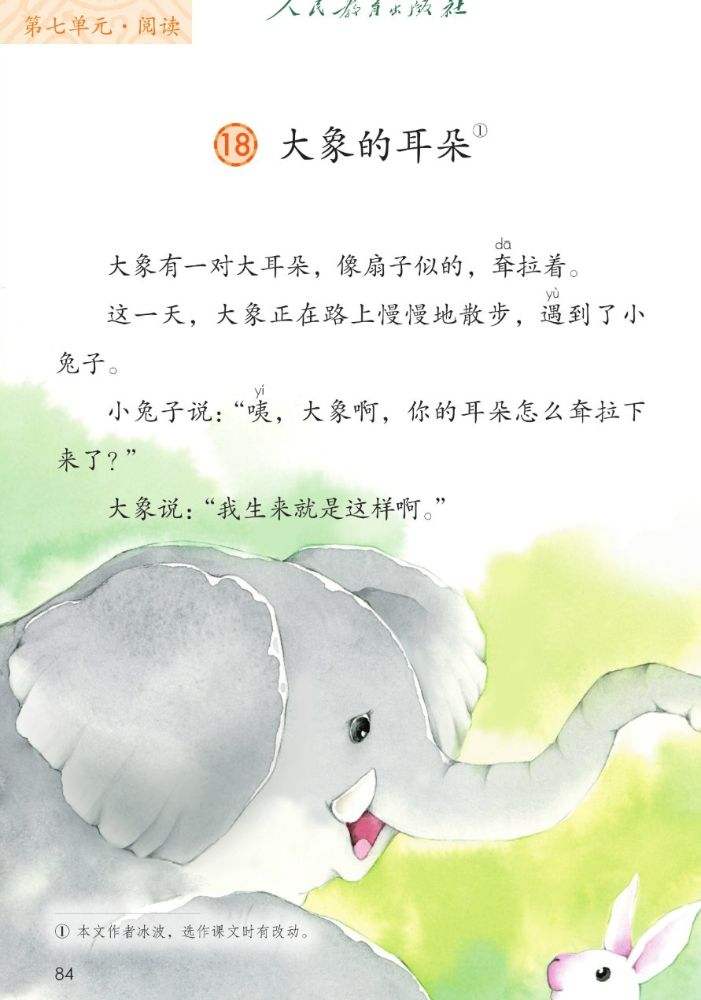
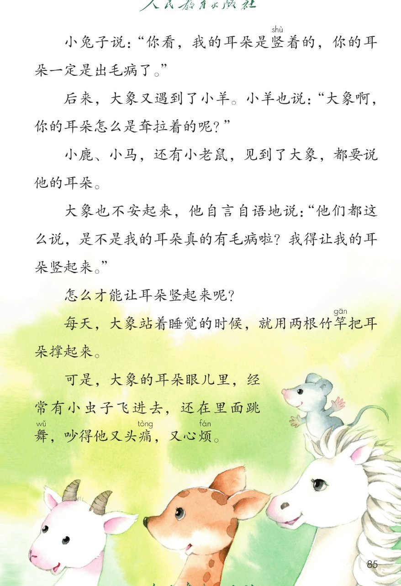
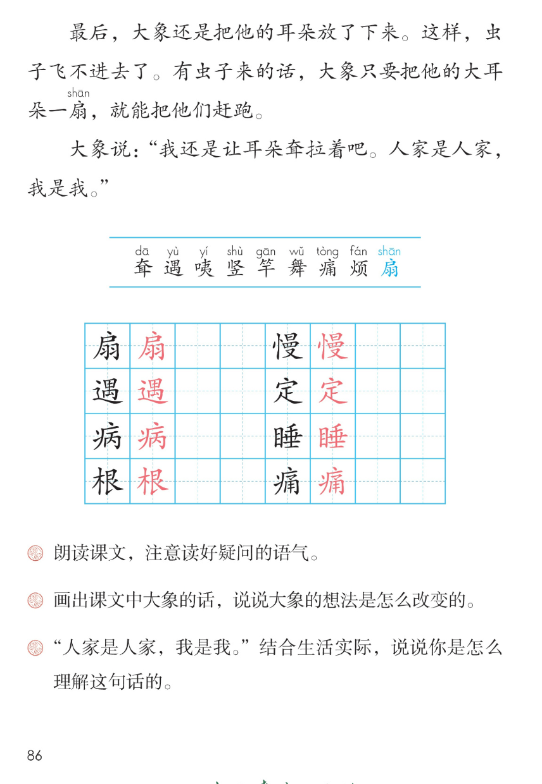

×
🔊 手机听不到声音怎么办？
① 先把手机
媒体音量调大 ，确认没开静音、没连蓝牙耳机；在微信里打开的，点右上角「⋯ → 用浏览器打开」。
② 还是没声音？到应用商店免费下载
Microsoft Edge 浏览器 （它自带朗读发声），用它打开本页面就能出声。
③ 换了 Edge 仍然没声音，说明这部手机的
硬件/系统不支持 网页朗读（多为老旧机型）；近几年买的新手机一般都能正常播放。
→ 打开声音自检
🐘 第 18 课《大象的耳朵》· 有声图文带读
统编版语文 · 第七单元·阅读 · 课本 第 84~86 页 · 作者：冰波
课文 13 段 · 共 16 句
会认字 9
会写字 8
听写词 10
近义词 4 组
深入理解 8 题
本课本领 朗读问句·理解自己
🎧 五步学（可随时点任意一句、一个字、一个词单独听）： ① 听读课文 ——对话故事，一句一句读，读到哪一句哪一句发光；开「跟读」后读完一句留时间让你自己读。② 学字词 ——9 个会认字、8 个会写字（含书写提示），点一个读一个。③ 词语·听写·造句 ——先读故事词语积累，再听写 10 个词（读两遍→你写→报答案→听示范句），最后听 4 组近义词辨析。④ 深入理解 ——8 道题（认知 / 理解 / 运用 / 拓展），开放题答案不唯一，先想后看。⑤ 分节朗读·想象画面 ——按五步理清大象想法的变化，再听五位朗读者分组读这个故事。
📚 第七单元·阅读（本课定位）： 第18课《大象的耳朵》 → 第19课《蜘蛛开店》 → 第20课《青蛙卖泥塘》 → 第21课《小毛虫》 → 语文园地七
点段前的 ①~⑬ 听整段
🔁 跟读模式：关
👁 隐藏注音（自测用）
注音只标本课要认、要写的字和课本明确标了音的字，读音来自课本第 86 页生字表
🎤 朗读要求（老师标准） 耷 读第一声，遇 读第四声，咦 读第二声，竖 读第四声，竿 读第一声，舞 读第三声，痛 读第四声，烦 读第二声，扇 读第四声；不添字、不漏字 ：逗号停得短，句号停得长，一句一句读清楚；读好问句的语气 ：你的耳朵怎么耷拉下来了，要读出好奇，句尾上扬；大象的话读出变化 ：开头平平静静，中间不安怀疑，最后坚定又自在。
①
大象有一对大耳朵，像扇shàn 子似的，耷dā 拉着。
②
这一天，大象正在路上慢慢地散步，遇yù 到了小兔子。
③
小兔子说：“咦yí ，大象啊，你的耳朵怎么耷dā 拉下来了？”
④
大象说：“我生来就是这样啊。”
⑤
小兔子说：“你看，我的耳朵是竖shù 着的，你的耳朵一定是出毛病了。”
⑥
后来，大象又遇yù 到了小羊。
小羊也说：“大象啊，你的耳朵怎么是耷dā 拉着的呢？”
⑦
小鹿、小马，还有小老鼠，见到了大象，都要说他的耳朵。
⑧
大象也不安起来，他自言自语地说：“他们都这么说，是不是我的耳朵真的有毛病啦？我得让我的耳朵竖shù 起来。”
⑨
怎么才能让耳朵竖shù 起来呢？
⑩
每天，大象站着睡觉的时候，就用两根竹竿gān 把耳朵撑起来。
⑪
可是，大象的耳朵眼儿里，经常有小虫子飞进去，还在里面跳舞wǔ ，吵得他又头痛tòng ，又心烦fán 。
⑫
最后，大象还是把他的耳朵放了下来。
这样，虫子飞不进去了。
有虫子来的话，大象只要把他的大耳朵一扇shàn ，就能把他们赶跑。
⑬
大象说：“我还是让耳朵耷dā 拉着吧。人家是人家，我是我。”
🤔 想一想（点我可跳过）
点一张图，听读整页

第 84 页 · 课文第 1~4 段

第 85 页 · 课文第 5~11 段

第 86 页 · 课文末段·生字表·课后题
📖 人教版《语文》二年级下册 · 课本第 84~86 页 · 图片仅供个人学习，版权归人民教育出版社所有
点一个字，听读音、词语和课文里的句子
结构、部首、笔画与书写提示为通用规范，供参考，以教材和老师的指导为准
扇
shàn
扇子 · 电扇
10 画 · 半包围（户）
户字头写扁，羽字写匀
慢
màn
慢慢 · 快慢
14 画 · 左右（忄）
竖心旁写窄，曼字写稳
遇
yù
遇到 · 相遇
12 画 · 半包围（辶）
里面写紧凑，走之托稳
定
dìng
一定 · 安定
8 画 · 上下（宀）
宝盖头写宽，底下写正
病
bìng
毛病 · 生病
10 画 · 半包围（疒）
病字头写宽，丙字写稳
睡
shuì
睡觉 · 睡眠
13 画 · 左右（目）
目字旁写窄，垂字写稳
根
gēn
两根 · 树根
10 画 · 左右（木）
木字旁写窄，艮字写稳
痛
tòng
头痛 · 疼痛
12 画 · 半包围（疒）
病字头写宽，甬字写稳
点一行，听词语和课后题的答案
📖 课后题（课本第 86 页照录） ：① 朗读课文，注意读好问句的语气。 ② 画出课文中大象的话，说说大象的想法是怎么改变的。 ③ “人家是人家，我是我。”结合生活实际，说说你是怎么理解这句话的。
耷拉 耷拉 垂下
自言自语 自言自语 嘀咕
不安 不安 担心
心烦 心烦 烦恼
读两遍 → 你在纸上写 → 报答案 → 听示范句
准备听写 · 共 10 个词
○ ○ ○
点下面的「开始听写」，听到一个词就写一个词。
▶ 开始听写
🔁 再读一遍
👁 看答案
点词听读，点句子听示范句，再自己说一句
1 扇子 会写字 · 扇
示范句：大象的耳朵像扇子似的。
✏️ 我也能说：什么像扇子
2 慢慢 会写字 · 慢
示范句：大象正在路上慢慢地散步。
✏️ 我也能说：谁慢慢地做什么
3 遇到 会写字 · 遇
示范句：大象遇到了小兔子。
✏️ 我也能说：谁遇到了什么
4 一定 会写字 · 定
示范句：你的耳朵一定是出毛病了。
✏️ 我也能说：什么一定怎样
5 毛病 会写字 · 病
示范句：他们都说大象的耳朵有毛病。
✏️ 我也能说：什么出毛病了
6 睡觉 会写字 · 睡
示范句：大象站着睡觉的时候撑起耳朵。
✏️ 我也能说：谁睡觉怎样
7 两根 会写字 · 根
示范句：大象用两根竹竿撑起耳朵。
✏️ 我也能说：两根什么
8 头痛 会写字 · 痛
示范句：虫子吵得他又头痛又心烦。
✏️ 我也能说：什么让人头痛
9 耳朵 课文词 · 耳
示范句：大象有一对大耳朵。
✏️ 我也能说：谁的耳朵怎样
10 赶跑 课文词 · 赶
示范句：大象把大耳朵一扇，把虫子赶跑了。
✏️ 我也能说：把什么赶跑
相同点 / 不一样在哪 / 各造一句
遇到 — 碰到
相同：都表示碰上、遇上 。
不一样：遇到 常指碰见人或事；碰到 更口语，还能指身体触碰。
遇到：大象遇到了小兔子。
不安 — 担心
相同：都表示心里不踏实 。
不一样：不安 是心里慌慌的、定不下来；担心 是放心不下某件事。
不安：大象也不安起来。
赶跑 — 赶走
相同：都表示把对方撵走 。
不一样：赶跑 突出跑着离开了；赶走 更常用于让人或东西离开。
赶跑：把虫子赶跑了。
一定 — 肯定
相同：都表示没有疑问 。
不一样：一定 表示坚决或必然；肯定 表示确认、不会错。
一定：你的耳朵一定是出毛病了。
像…似的（比喻） 大象有一对大耳朵，像扇子似的
自言自语 他自言自语地说
只要…就… 只要把他的大耳朵一扇，就能把他们赶跑
又…又… 吵得他又头痛，又心烦
标「答案不唯一」的题，说得有道理都对
认知 课文中哪些小动物说大象的耳朵有毛病？看解析
🤔 想一想
解析：
小兔子：一定是出毛病了
小羊：怎么是耷拉着的呢
小鹿、小马、小老鼠都说
认知 大象的耳朵本来是什么样的？他一开始怎么想？看解析
🤔 想一想
解析：
像扇子似的耷拉着
我生来就是这样啊
平平静静，不在意
理解 大象为什么想让耳朵竖起来？看解析
🤔 想一想
解析：
小兔子小羊他们都说
不安，自言自语地怀疑
想让耳朵竖起来
理解 用竹竿撑起耳朵后，发生了什么？看解析
🤔 想一想
解析：
虫子飞进耳朵眼儿里
又头痛又心烦
竖耳朵不适合大象
理解 “人家是人家，我是我”是什么意思？看解析
🤔 想一想
解析：
别人的是别人的，我是我
适合自己的才是好的
不盲目跟别人比
运用 用“自言自语”说一句话。看解析
🤔 想一想
解析：
谁自言自语地说什么
做题、找东西时都会用
🌈 答案不唯一，说得有道理都对
运用 用“只要……就……”说一句话。看解析
🤔 想一想
解析：
只要怎样就能怎样
学习、生活的事都可以
🌈 答案不唯一，说得有道理都对
拓展 你觉得大象把耳朵放下来，对吗？说说你的想法。看解析
🤔 想一想
解析：
放下来是对的
适合自己，还能赶虫子
🌈 答案不唯一，说得有道理都对
点一步，听这一步
💬 想象支架：先 想耷拉的耳朵 → 再 想大家都来说 → 接着 想大象不安撑耳朵 → 然后 想虫子飞进耳朵眼儿 → 最后 想放下来，人家是人家我是我。
点一张卡，听这一节的句子
🌈 小兔子问·大象答
小兔子问·大象答
💬 小兔子读出好奇，大象读得平静
🌈 大家都来说耳朵
大家都来说耳朵
💬 问句读出好奇，大象读出不安
🌈 大象不安·想办法
大象不安·想办法
💬 自言自语，读出怀疑和发愁